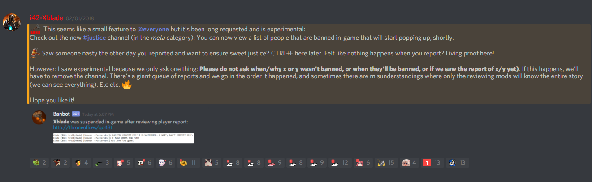

I’m tempted tonight to just play to report.
Late gmt is so toxic I can’t record anymore at that time.
May even make a montage of the toxic.
It’s a shame we can’t watch live games rather than playing and report these arses.
Or kick them mid game off of server to warn/ban them.
1 Like
Until there’s an option in game for escaping harassment real-time, sniping is the only option you leave us, Devs. Please offer us another.
Edit: + Please explain how sniping a toxic PoS is something that would get me in trouble. If a person is trolling to the point of detrimenting gameplay for other players, that would be considered throwing, yes? So how is removing that element from the game (in lieu of a functional system that would do it for me) an offense?
Just beceuase you shoot a criminal that hasn’t committed a crime against you doesn’t mean it isn’t murder
Ya, but this is definitely not real life o.o
So here’s an example – Fool and Scorned:
Can’t verify the claims immediately, they’re a pain in the ass, and they should be sniped as per the intended game mechanics. So what if I think someone is doing a Fool play? I absolutely should snipe them. If someone is just being a straight up toxic fool (as opposed to Fool) then it really isn’t my misplay (or a misplay at all) if they lead me to believe that’s what they are.
I’m trying to say just because you break the rules to punish trolls, doesn’t make it okay
2 Likes
I hear that. But Fool class sort of builds in a caveat. If a player is being an obnoxious twat, I can say with honesty, “I thought he was Fool”
And as much as I would like to unilaterally agree without that caveat – there still doesn’t exist a functional alternative for escaping shit we don’t wanna read on our monitors. I am all ears as far as other ways to handle it - but if I have to choose between my emotional well being and someone else’s… well, I ain’t no martyr, and I’m unwilling to eat constant shit just to play the game. What options does that leave? Uninstall or get over it? I guess I’ll take my chances with the Fool sniping.
(+ It’s also difficult to continue being dedicated to a Report system that hasn’t provided any visible or material improvements in my gameplay experience. Toxic player elements continue to steadily increase, and we have not been offered any alternative methods to escape other players’ toxicity. In this way, I don’t feel it’s entirely fair for Devs to ask us to just keep /reporting – it’s all we CAN do after all – and have faith it’s making a difference. On a personal level, it actually is not making any difference at all.)
I’m just gonna say. I’ve seen absolutely no changes in the way the report system works in the time I’ve played this game. (Around 300 hours)
BUT. Sheriff has been buffed, nerfed, buffed again, nerfed again. I’ve seen king changed dozens of times. Noble has been removed and added again. I don’t really see many people complaining about Sheriff, King OR Noble. We usually just like one variant or the other.
What I DO see though, is CONSTANT posting here on the forums and in game about the massive bulk of cancerous and toxic players in the game. So please… Instead of changing Sheriff, Court Wizard, King or Noble again, can we PLEASE have some sort of update to the report system so it’s a bit more reactive? I feel like I’m just reporting people for no reason.
However, if you snipe a troll, you’ll BOTH get in trouble. Don’t forget there are other people in the game beside you + the troll.
So would you rather have me sit here while this “Troll” tells me to hang myself IRL, or is a prince constantly jailing and harassing me for no reason as a BD, or someone talking about pedophilia? SOMETHING needs to be done with this game, or people will be leaving in droves due to the small cancerous tumor that is growing.
1 Like
Nailed it.
352 hours played, 1 modification to Report function (adding a set and limited list of reasons for report).
From a logic and liability standpoint, I do not comprehend why it’s not a matter of more concern that players promote pedophilia on their servers, or tell each other to commit suicide… and yet the word “autism” is censored for the faint of heart.
(PS, please un-censor that. It is not innately a slur, and the censorship is super offensive to people who identify as such. Like censoring the word Mexican. Like… c’mon you guys >.< )
It’s utterly disheartening, but this burgeoning toxic iteration of the community is absolutely repellent, as opposed to the wonderfully funny supportive community here I first encountered. I have the sads for ToL. I hope it recovers from the brink of death by Poison, but it seems the Healers are AFK.
GL bois
The forums here are generally better if you want people that are not trolls to play with. You can usually grab me on discord DMs if you want to play(Name is on my profile, but I cannot play right now as I need a new PC) Also there is FoL which has a pretty good player base and non toxic.
Telling people to kys is never okay. I would say leave that game ASAP and leave a not ein your journal of why you left, I personally wouldn’t report you if you left a good reason
2 Likes
Those are handled by completely different developers.
One of whom has no other job (that I’m aware of), and one of whom also handles server management, community outreach, financial transactions, artist coordination, future planning, and running pretty much the entire business with his wife.
I’ll let you guess which is which. 
4 Likes
Clap for the inside scoop!
Fr that’s sweet and awesome (truly), it just doesn’t invoke any sympathy from me.
I don’t jive with the “worship our devs, f*ck our fellows” mentality. If yer gonna take on this kind of project, know what yer gettin yerself into or go the way of all the other games that faded to death of obscurity. It’s not really a personal matter.
Point being: If it’s a matter of man hours, allow player volunteers to help with game monitoring and cancer mitigation (I can go find the thread begging the Devs for this option). There’s a solution waiting on-deck for that. So, that explanation is irrational – or the Devs are.
Which means it means it’s either not the man hours and there’s a different resource issue,
Their priorities are beyond fukt,
Or they just don’t care about this issue.

1 Like
From a logic and liability standpoint, I do not comprehend why it’s not a matter of more concern that players promote pedophilia on their servers, or tell each other to commit suicide… and yet the word “autism” is censored for the faint of heart.
Wait, seriously? They ban the word “autism”? As an actual autistic person, I have to ask, who the hell made THAT decision?!
1 Like
Have you ever seen the YouTube comment section?
Autism is commonly used as an insult, a way to say “this person is stupid and different and a problem to the society.”
Also autism isn’t something you identify as, it’s an actual condition. You get diagnosed with it, or you Don’t have it. You can’t identify as autistic unless you have the condition??
1 Like
I doubt anyone would feel good being called as “autistic”.
From all the people reporting it saying they are deeply disheartened by seeing the term used in a really negative fashion.
There are tons of terms that that are made to be used decently, then ended up using it to really hurt people. In-game, there’s no reason to even use that term in-game, both the politically correct and incorrect ways: it’s either off-topic or hurtful.
One thing we continue to emphasize is that primary source of Throne news and updates will be dominant on our Discord, not the forum ~ https://discord.gg/tol . Forum is usually best for BIG announcements like patch notes or huge changes.
We’ve had tons of updates regarding this in #news

Then reports are very real and get dealt with quite fast. Here is what you DON’T see (sorry whoever is in this pic):
https://i.imgur.com/mMuN85G.png
Everything you see is done by coding bots, detection algorithms, real human reporting, code to DISPLAY the reports and gather all the data, +add an incredible amount of filters. We also have guides and mods review cases and mods can even take action. Guides will likely be able to take limited actions soon. We also have extra people working on in-game moderation. While Boslof codes in-game and balance, this is the project I’ve been taking on solo (for the coding aspect). The guides/mods help a crazy ton, and the players themselves for actually reporting.
We’re very human and we do have very limited resources, yet we are still (and have been) prioritizing moderation. All these report tools have taken ages to make. We also recently coded Steam bans inside so that it’ll even reflect on your profile if permabanned as additional encouragement to stop being douchey enough to get a permaban.
We’ve been fighting trolls like crazy, but we can’t Minority Report all of them (although we’re working on systems that can try to predict based on your history. See those secret stats above that reveal how many times you’ve reported others or been reported, games played, etc?).
TL;DR: We bust our butts with moderation and you can even get a live stream of in-game bans WITH the attached reason for ban (usually NSFW, care) and have taken a huge hit on reviews for “revenge reviews” after a ban, and even still continue moderation. If you want proof things are happening, jump to Discord’s #justice channel. If you want the perfect match with almost guaranteed 0 toxicity, group with people in Discord.
7 Likes
Thank you for sharing this data. Giving us something to look at and say “oh ok” is very helpful. 10/10 for real thx
If you think someone is a fool/scorned and you night kill them for that reason then you are not breaking any rules.
The problem is if you kill confirmed BD due to being a troll.
as Xblade mentioned, I guess they’re still working on the algorithms for Minority Report level functionality
I don’t disagree with you, but! In the meantime, there’s not really any way to disprove someone who says “Oh, sorry, I thought they were Fool”
If loopholes were intrinsically unethical, they wouldn’t be a legitimate aspect of law… which is neither relevant nor – again – academically arguable.
But now that I’ve seen evidence that we as the player-base are actually helping by continuing to report, I don’t feel the need to be so aggressively cavalier in defending a positive play experience.
Hopefully some others might feel similarly.
Thx again
1 Like
To add to this, check out the #justice channel in Discord for realtime proof
1 Like
Locking this – made an official announcement about this. Please respond further here: